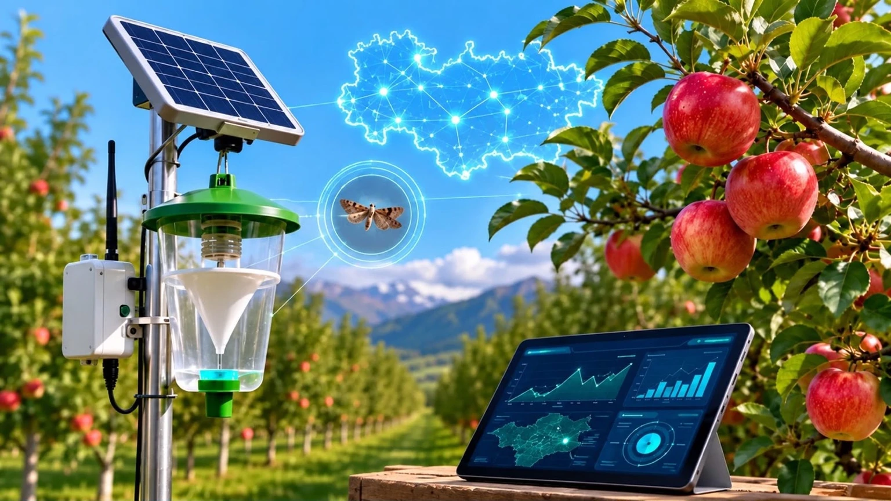
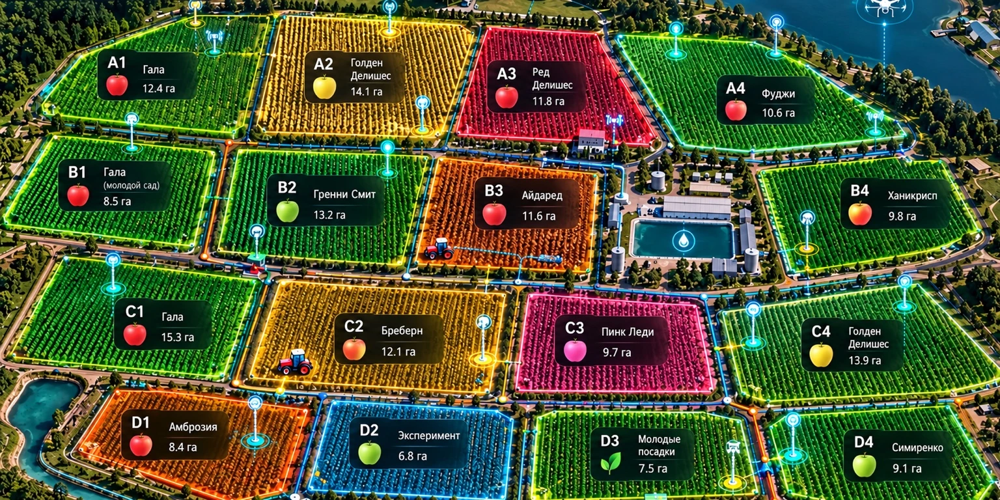

Весь сад — перед глазами.
Решения — до потерь.
Почва, вода, заморозки, болезни, вредители, урожай и оборудование — в одной цифровой диспетчерской. Система не просто показывает датчики: она объясняет риск, прогнозирует развитие ситуации и подсказывает действие.
Активные процессы сада
в реальном проекте карточки получают данные от датчиков, контроллеров, техники и AIКарта сада
слой: общее состояние
Риски
по приоритетуВлажность слоя 20–40 см ниже целевого диапазона. Осадков не ожидается.
Рост активности яблонной плодожорки за 48 часов.
Последний пакет 58 минут назад. Данные помечены как устаревшие.
Вода · 7 дней
м³/суткиПроизводственный контур сада
контроль потерь по всей цепочкеСостояние сектора: требует внимания
Главная причина - дефицит влаги в активной корневой зоне. Остальные параметры стабильны.
Профиль корневой зоны
движение влаги по глубинеЗапустить полив на 82-95 минут с контролем прохождения фронта влаги. Остановить раньше, если слой 60 см начнёт быстро насыщаться.
Риски сектора
сейчасПаспорт сектора
Основные параметры участка, которые используются в расчётах рекомендаций.Журнал событий сектора
Хронология: что система заметила, какую рекомендацию сформировала и какое действие было выполнено.Зафиксирован дефицит влаги20 и 40 см вышли ниже целевого диапазона.
Сформирована рекомендацияПолив 82-95 минут, контроль расхода и глубины.
Оператор уведомлёнСообщение доставлено в мобильный интерфейс.
Рекомендации Модуль полива
объяснимая логикаПричины: VWC 20/40 см ниже целевого диапазона, ЭТ₀ высокая, осадков не ожидается, предыдущий полив 42 часа назад. Ориентир: 82-95 минут с контролем фронта влаги.
Профиль влажности стабилен. На 60 см отсутствует признак глубокого ухода воды.
Температурные узлы
Несколько точек в разных частях сада показывают локальный микроклимат. Низина может охлаждаться быстрее верхней части участка.| Узел | Зона | T | ΔT/ч | Статус |
|---|---|---|---|---|
| T-01 | верх | +2.6°C | -0.3 | норма |
| T-02 | центр | +1.8°C | -0.4 | норма |
| T-03 | низина B | +1.1°C | -0.6 | наблюдать |
| T-04 | восток | +2.1°C | -0.3 | норма |
T - текущая температура в конкретной точке. ΔT/ч - изменение температуры за час. Например, -0.6°C/ч означает, что воздух охлаждается примерно на 0.6°C каждый час. Чем быстрее падение температуры и чем холоднее низина, тем выше риск локального заморозка.
Карта температур сада
Показывает, где именно внутри сада холоднее всего. Это важнее общего прогноза по городу, потому что рельеф создаёт локальные зоны риска.При сохранении текущего темпа охлаждения первой критической зоной станет низина B7.
Яблонная плодожорка
Модуль вредителейКоличество уловов растёт. Одновременно СЭТ приближается к диапазону активного развития поколения. АгроАссистент учитывает три фактора: ловушку, СЭТ и выборочный осмотр плодов. Если все три признака усиливаются одновременно, уровень фитосанитарного риска повышается и требуется решение агронома по дальнейшим действиям.
Умная ловушка C-01
последний снимок 05:50Модуль болезней
не диагноз, а рискРиск формирования инфекционного окна - умеренный. Температура и продолжительность увлажнения листа приближаются к критическому сочетанию. Система оценивает погодные условия формирования инфекционного окна.
Диагностика гидравлики
Система сравнивает давление до и после фильтра, фактический расход и состояние клапанов.| Сценарий | Признаки | Состояние |
|---|---|---|
| Засорение фильтра | ΔP растёт при том же расходе. ΔP - это разница давления до и после фильтра | не обнаружено |
| Утечка | Расход растёт, давление падает | не обнаружено |
| Клапан/линия | Клапан открыт, но расход почти отсутствует | не обнаружено |
| Насос | Команда на насос дана, но ток двигателя отсутствует | не обнаружено |
От состояния сада - к урожаю, людям и хранению.
Эти модули не перегружают первый пилот, но уже заложены в архитектуру данных. Они превращают мониторинг в полноценную производственную систему.
Динамика ожидаемого сбора
Чем ближе уборка, тем больше фактических данных и тем уже диапазон возможной ошибки прогноза.| Этап | Прогноз | Точность прогноза |
|---|---|---|
| Май · цветение | 940 т | ±18% широкий диапазон, потому что сезон только начинается |
| Июнь · завязь | 975 т | ±11% после оценки завязи прогноз становится точнее |
| Июль · рост плода | 962 т | ±7% учитываются количество и рост плодов |
| Август · предуборочный | 958 т | ±4% предуборочная оценка, максимальная точность |
Прогноз уточняется по мере появления реальных данных: цветение, завязь, счёт плодов, размер, стресс, погода и фактическая выборка.
Производительность уборки
бригады, контейнеры и качествоСектор C4 · 56 кг/чел·ч · брак 7,4% · контейнеры QR/RFID.
Сектор B2 · 51 кг/чел·ч · брак 5,8%.
Состояние партии в холодильнике
цифровой паспорт храненияКамера №4 · 2.1°C · влажность 92% · CO₂ 1.8% · прогноз допустимого хранения: 127 дней.
Модули платформы
Каждый модуль решает отдельную производственную задачу. Вместе они формируют единую систему управления садом.Не просто графики - интерпретация состояния сада.
Система моделирует естественные суточные и сезонные изменения: дневной прогрев, ночное охлаждение, подсушивание почвы, кратковременные дожди, периоды переувлажнения, рост фитосанитарного риска и восстановление после полива.
Динамика за 1 час
Нажмите на точку графика, чтобы увидеть пояснение значения и возможное влияние на сад.Сводка состояния
АГРОАССИСТЕНТВодный баланс и фитосанитарные параметры находятся в рабочем диапазоне.
Рекомендации периода
почему система так решилаАгрономическая интерпретация
за последний часВлияние на урожай и качество
оценка риска, оценка агрономического рискаХронология смоделированных событий
хронология садаКаждое значение в системе должно иметь источник: конкретный датчик, фотографию ловушки, лабораторный результат или ручной ввод. Система хранит источник, время измерения и качество данных.
Перед автоматическим управлением пороги и модели калибруются по культуре, сорту, почве, фазе развития и данным конкретного хозяйства.
Устройства и датчики
Здесь видно, какой датчик установлен, где он находится, когда последний раз передавал данные и не устарела ли информация.| ID | Тип | Сектор | Последний пакет | Батарея | Состояние |
|---|---|---|---|---|---|
| SOIL-A-01 | Профиль почвы | A | 2 мин | 91% | в сети |
| SOIL-A-02 | Датчик почвы RS‑485 | A | 58 мин | 76% | устарели |
| SOIL-B-01 | Профиль почвы | B | 4 мин | 84% | в сети |
| TRAP-C-01 | Умная ловушка | C | 43 мин | 67% | в сети |
| METEO-01 | Метеостанция | центр | 1 мин | 100% | в сети |
| FLOW-01 | Расходомер | насосная | 20 сек | - | в сети |
Питание растений — по рецепту, факту и обратной связи.
Контроль EC/pH, расхода концентратов, уровней баков и состояния корневой зоны.
Баки и каналы
текущий остатокАвтокоррекция
последние событияEC ниже целиКанал B увеличен на 4%
pH 5,91Кислотный канал +2%
СтабилизацияEC 1,38 · pH 5,86
Каждый проход — по цифровой траектории.
RTK, IMU, машинное зрение и телематика объединены с заданиями сада.
| Техника | Операция | Сектор / ряд | Скорость | RTK | Прогресс |
|---|---|---|---|---|---|
| Т-01 | умное опрыскивание | C1 · 41/58 | 5,3 км/ч | FIX 2,0 см | 71% |
| Т-02 | кошение | B2 · 18/34 | 6,1 км/ч | FIX 2,3 см | 53% |
| R-03 | робот междурядий | D3 · 9/22 | 2,4 км/ч | VISION+RTK | 41% |
| H-01 | вывоз контейнеров | A1 | 8,4 км/ч | FIX | 63% |
Сад видит себя сам.
RGB-камеры, LiDAR, мультиспектр и AI привязывают каждую аномалию к карте и конкретному ряду.
Последние обнаружения
привязка к RTKМультиспектральный контроль
дрон + спутникNDRE снижается второй цикл наблюдений. Создано задание на наземный осмотр.
Новых крупных зон стресса не выявлено.
Контроль не заканчивается после сбора.
Каждая партия связана с сектором, датой сбора, весом и режимом хранения.
Датчики должны возвращаться деньгами.
Система связывает технологические действия с ресурсами, потерями и прогнозом урожая.
Что система предотвратила / обнаружила
DEMO-расчётПокажите не экран — покажите реакцию системы.
Выберите сценарий. Показатели и журнал событий изменятся как в реальном саду.
Состояние сценария
автоматическая логикаAgro Assistant продолжает мониторинг 188 устройств и 15 секторов.
Журнал реакции
последние действияLIVE DEMO запущен. Критических аварий нет.